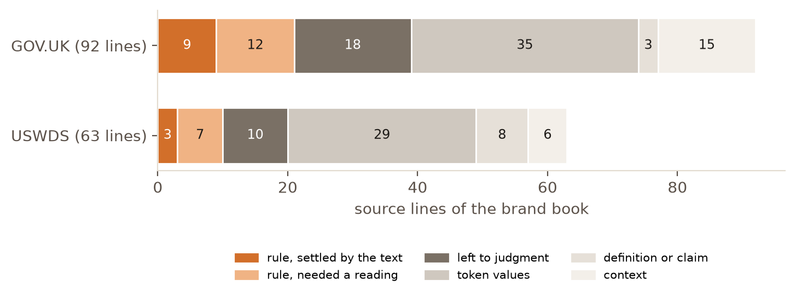
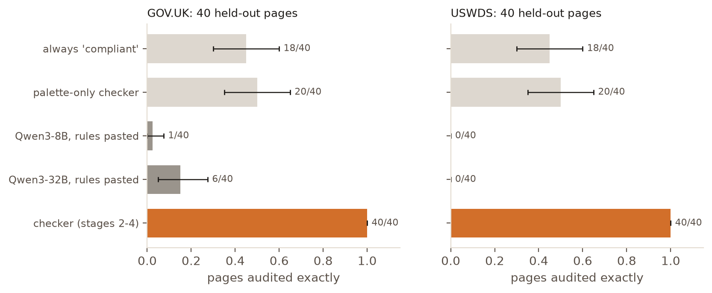
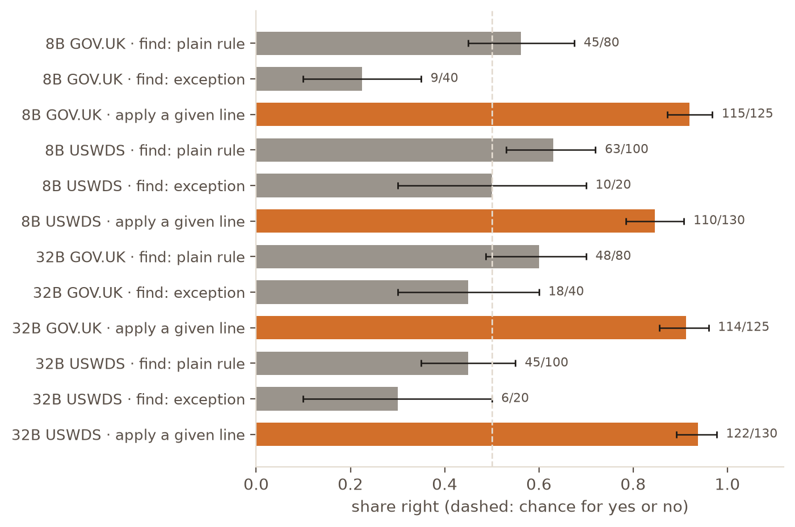
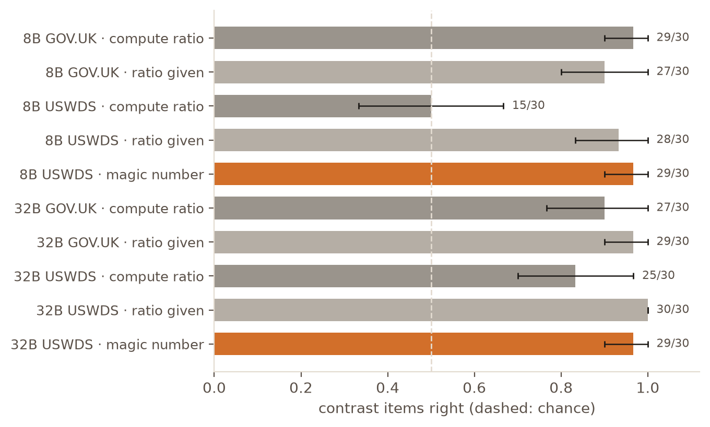
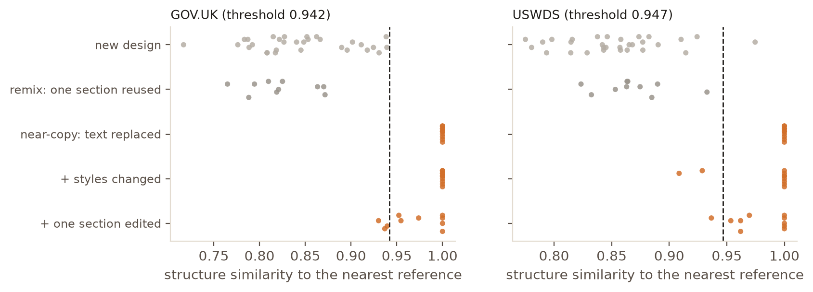

← Research·Experiments·
A brand book as a checkable spec: a checker audits all 80 pages; open models with the same rules audit 7
Two public design systems became 33 rules a program can check, each traced to the line it came from. A checker built from them audited every held-out page exactly and wrote a proof for each. Two open models given the same brand book audited 1 and 6 of 80 pages exactly: they flagged rules about source code and colour tokens on pages that broke nothing.
results/summary.json and results/copy.json.Summary: the short answer and the key results
In short
Can a public brand book become a spec a program can check, and do language models apply it without one?
Yes for the first, with limits; mostly no for the second. Two open design systems (GOV.UK and the U.S. Web Design System) became 33 checkable rules, with 7 exceptions and a source line for each. 19 of those rules needed a reading the text does not settle, and 28 normative lines stayed judgment. A checker built from them agreed with the planted answer on all 363 generated pages and wrote a proof per page: the rule, its quoted line, the element, the value and where it fails. Given the same brand book and the same facts, Qwen3-8B and Qwen3-32B audited 1 and 6 of 80 held-out pages exactly. Applying a line they were handed was easy (0.88 and 0.93). Finding the right line was not (0.53 and 0.49), and exceptions were hardest. A structure check blocked 54 of 60 near-copies of the brand's own pages and allowed 59 of 60 new designs. Token overlap could not tell them apart (AUROC 0.72 and 0.77).
Key results
| What we tested | Result | Compared with |
|---|---|---|
| Can a brand book become a checkable spec? | Partly. 155 source lines became 33 rules (7 exceptions). 14 rules follow from the text alone; 19 needed a reading we chose and wrote down. 28 normative lines are judgment, or describe source code a rendered page does not show | The GOV.UK site's own buttons fail a literal reading of its spacing scale (7 and 8 px padding, a 17 px margin) |
| Does the checker return a proof, and is it right? | Yes. It agreed with the planted answer on 363/363 pages. Its extractor matched the generator on 245,978/245,978 facts, and its JavaScript port matched it on 2,363/2,363 pages and mutations | The planted violations and exception traps, known by construction |
| Do open models audit pages correctly with the brand book pasted in? | Almost never. Qwen3-8B 1/80 exactly, Qwen3-32B 6/80; off-brand pages 0/44 and 1/44. All 36 compliant pages drew a false claim from at least one model; 503 of Qwen3-8B's false claims on GOV.UK pages cite "Do not copy the hex values" (G5) | The checker: 80/80. Always answering "compliant": 36/80. A checker that knows only the palette: 40/80 |
| Is finding the rule harder than applying it? | Yes. Naming the deciding line: 127/240 (Qwen3-8B) and 117/240 (Qwen3-32B); applying a given line: 225/255 and 236/255 (+0.35 [0.28, 0.43] and +0.44 [0.37, 0.51]). When an exception decides, Qwen3-8B named it for 9 of 40 GOV.UK elements | A random line from the right page of the brand book: 0.14 (GOV.UK) and 0.21 (USWDS) |
| Is a rule written as arithmetic easier than a ratio to compute? | Not when the formula is quoted. USWDS's grade arithmetic 29/30 vs GOV.UK's contrast ratio, formula quoted, 29/30. Without the formula, Qwen3-8B got USWDS contrast items right 15/30, and 28/30 with the ratio given | The brand book's own claim (a grade gap of 50 gives 4.5:1) holds for all 28,551 palette pairs |
| Does the copy check block copies and allow new work? | Yes, on structure. Structure similarity AUROC 0.994 and 0.989; at a threshold set on dev, 113/120 held-out pages right. Remixes that reuse one section are never blocked (0/20) | Token overlap AUROC 0.72 and 0.77; once text is replaced, text overlap is near chance (0.47 and 0.60) |
01Introduction
A GOV.UK service page has a blue header, green buttons and black text, every colour taken from the published palette. Qwen3-8B was given the GOV.UK Design System's colour, type, spacing, link and button guidance, line by line, and the page's computed styles. On one held-out page it reported 32 problems, every one citing line G5: "Do not copy the specific hexadecimal (hex) colour values." The colours appear as hex values because that is how a browser reports them; G5 is about how the CSS is written, which a rendered page cannot show. The prompt said so. A checker built from the same lines found nothing wrong, and its proof lists the checks behind that verdict.
What is known. RuleArena (ACL 2025) found that language models given real rulebooks pick the wrong rule, and miscompute even with the right one. Episode 4 of this series formalised a slice of its airline rules: a checker built from formal rules doubled Qwen3-8B's exact answers, and most wrong answers began with a wrong rule. The approach is what Pramaana Labs calls a verification stack: turn rules into a typed spec, check answers against it, return a proof a person can sign off.
What is missing. Brand books are the natural next rulebook for taste, and they are messier than fee tables. They mix hard limits (contrast), token lists, conditions ("on the service.gov.uk subdomain"), exceptions (large text, disabled buttons), advice ("avoid", "try to simplify") and notes about how to write the code. How much of a real brand book can become checkable rules, and how open models do when asked to apply one, had not been measured on one example end to end.
How much of a public brand book can a program check, with a proof per page, and how do open models do with the same book?
What this note does. It formalises two public design systems by hand and tests the result on generated pages with known answers. It contributes:
- two formal brand specs (33 rules) with every rule traced to its line, and an account of what could not be formalised: 19 readings the text leaves open and 28 lines of judgment;
- a checker that writes a proof artifact per page, checked on 363 generated pages, with an extractor that reads any rendered page, run on the two brands' own home pages;
- a copy check that blocks near-copies of the brand's existing pages and allows new on-brand work;
- a RuleArena-style test of two open models, with rule identification measured apart from rule application;
- an interactive: one page through the four stages, in 18 versions (section 5.7).
What counts as success. Written down before any run:
- the checker agrees with every planted answer, and the extractor reads back every value the generator wrote (otherwise the spec or the tape measure is wrong);
- every check in a proof names its rule, its source line, the element and the value;
- the copy check separates near-copies from new designs on held-out pages, and beats token overlap;
- the models are measured on held-out pages after all tuning stopped, with identification and application scored apart.
02The four stages, built for a brand book
Episode 4 built the four stages of a verification stack for airline fees. Table 1 shows each stage for a brand book; the interactive in section 5.7 walks one page through all four.
| Stage | What it does | Here |
|---|---|---|
| 1 Formalise the rules | Rule text becomes typed rules: definitions, conditions, exceptions, each with its source | formalise.py: 155 vendored lines become tokens, component definitions (which class name is a default button), 33 rules and a residue list. Each rule has a kind, a modality (must, should, avoid), the lines it cites, what it overrides, and whether the text settles it |
| 2 Formalise the case | The thing being checked becomes typed facts the spec can read | extract.js: a headless browser renders the page at 1280 px; the extractor reads each element's computed role, colours, effective background, font, size, weight, line height, margin, padding and position |
| 3 Solve and check | Evaluate every constraint | checker.py: every rule on every element it applies to, with exceptions deciding in place of the rules they override (about 280 checks on a GOV.UK page, about 170 on a USWDS page) |
| 4 Prove and explain | A record a person can read and sign off: rule, inputs, pass or fail, and where it fails | The proof artifact: every check with its rule, quoted line, element, property, value and expected value, failures first |
Figure 1 follows one rule through the three forms it takes, on the interactive's start page with its default button moved 20 px to the right inside its form.
Brand-book line G72
“Align the primary action button to the left edge of your form.”
Formal rule
{"id": "GOV-BTN-ALIGN",
"lines": ["G72"],
"kind": "align_left",
"applies": ["button-default",
"button-start"],
"params": {"tolerance_px": 1},
"settled": "decided"}Proof step
{"rule": "GOV-BTN-ALIGN",
"element": "e23",
"property": "left edge",
"value": "180",
"expected": "form edge 160",
"pass": false,
"why": "20 px from the form's
left edge"}03Setup
The brand books. Two public design systems whose licences allow this use (Table 2). Each is vendored as plain text, one sentence or table row per line, with its upstream file and line (vendor/README.md). Company brand books, and a design system whose terms restrict reuse, were not used. No logo or licensed typeface is reproduced.
| Brand book | Pages used | Lines | Licence |
|---|---|---|---|
| GOV.UK Design System, with the WCAG 2.2 lines its colour page points to | Colour (and its data file), Typeface, Type scale, Spacing, Links, Button; WCAG 1.4.3 and three definitions | 92 | Open Government Licence v3.0 (code MIT); WCAG under the W3C Document License |
| U.S. Web Design System (USWDS) | Using color (with the "magic number"), theme and system colour tokens, spacing units, font size, using type, font family, Button guidance | 63 | Public domain in the U.S.; CC0 1.0 worldwide |
The pages. A generator builds pages from each brand's components (header, headings, paragraphs, links, buttons of each variant, form fields, cards, banners, a dark call-to-action band, footer) in four page types, with our own invented text. It renders them to HTML with the brand's class names and inline token values, and records every value it writes, so the answers are known by construction (Table 3).
- On-brand pages break no rule.
- Exception traps are on-brand pages that rely on an exception: a disabled button at 2.2:1, a large heading at 3.2:1, a bold 19 px label at 3.7:1, logo text at 1.6:1, an 80 px heading, a GOV.UK page on another government domain set in Arial.
- Off-brand pages carry one to three planted violations from a catalogue of 30 (20 for GOV.UK, 10 for USWDS), each designed to break exactly one rule on one element. Examples: an off-palette grey, body text at 3.6:1, a heading in Helvetica on a service.gov.uk page, 18 px body text, a 35 px margin, a link with no underline, "Save And Continue", a second default button, a warning button that says "Continue", a card in the focus yellow.
| Set | What it is | Dev | Held-out | Used in |
|---|---|---|---|---|
| Compliance pages (T1) | Per brand: on-brand, exception traps, off-brand | 2 × 12 | 2 × 40 (12, 6, 22) | 5.2, 5.3 |
| Identification items (T2) | A page and one element's property: which line decides it? A third are decided by an exception (a sixth for USWDS, which has one exception rule) | 2 × 30 | 2 × 120 | 5.4 |
| Application items (T3) | The quoted lines and one element's facts: does it comply? Balanced yes and no | 32, 35 | 125, 130 | 5.4, 5.5 |
| Ratio-given control (T3c) | The contrast items again, with the contrast ratio stated | 2 × 8 | 2 × 30 | 5.5 |
| Copy set | Per brand: reference pages, near-copies at three strengths, new designs, remixes | 2 × 36 | 2 × 82 | 5.6 |
| Interactive | One GOV.UK start page in 23 versions (18 shown) | 23 | 5.7 | |
Every set was generated, checked and hashed before any model replied (data/manifest.json).
Two arms for page audits, and the checker. Both arms get the same page written as text, one line per element with its computed facts, for example e23 button-default "Download the form" | text #ffffff on #0f7a52 | background #0f7a52 | font GDS Transport 19px, line height 25px, weight 400 | margin 0 15 0 20 | padding 10 15 10 15 | placed on #ffffff | in a form; left edge 180px, the form's left edge 160px. These are exactly the facts the checker reads.
- (a) LLM alone: told which design system the page should follow and asked, from what it knows, for every element that breaks it.
- (b) LLM with the brand book: all its lines, each with its id, then the page. It returns a list of
{element, line}pairs, or an empty list. - (c) the checker: no model; the spec on the same facts.
A page counts as audited exactly when (b)'s claims match the planted pairs and nothing else: each broken element, citing one of the lines its broken rule cites. On a compliant page only an empty list counts. Arm (a) cannot cite lines, so it is scored on the set of elements it flags. The looser measures (the right verdict, the right elements, a line the rule only reads) are in summary.json beside every strict one.
Models and settings. Qwen3-8B and Qwen3-32B (FP8 weights), thinking on, at Qwen's thinking settings (temperature 0.6, top-p 0.95, top-k 20), up to 12,000 new tokens, one reply per item, vLLM 0.10.1.1 on one H100. A second sample (seed 1) of Qwen3-8B's page audits measures sampling noise.
04How the study was run
- Write the plan with its design and four predictions, and commit it before building anything that produces a number (predictions in section 7).
- Vendor and formalise both brand books, and lint the specs: every rule cites existing lines, every exception names what it overrides, every reading the text leaves open carries its reason.
- Build and check the rulers against bars set in the plan (section 5.2): all passed (ruler.json). The checker's test pages found one reading the text leaves open (Figure 1), which was then written into the spec.
- Generate and freeze every page and item set.
- Tune on dev only with Qwen3-8B: 7 logged tries in results.tsv (Table 4), costing $1.01.
- Run held-out once: both models, every task, plus the seed-1 page audits.
- Score with a 95% bootstrap over items (10,000 resamples), paired where items are shared.
| Fixed before any trial | Changed after reading dev results |
|---|---|
| The brand books and their slices, the specs' rules, the page generator, the arms, both models and their settings, the strict metrics, four predictions | The prompt adds one sentence: the facts are rendered values, so lines about how the code is written cannot be judged from them. Every dev compliant page had drawn claims, nearly all citing G5 or U1; after the change all 12 were still flagged (dev audits stayed at 0/24), and tuning stopped there |
| The copy check's components (structure, layout, style, text, tokens) | The gate is structure alone, chosen on pooled dev pages over the planned min(structure, layout), which scored 26/30 on dev in each brand against 29/30. Held-out was printed in the same run, so all three candidate gates are reported in section 5.6 |
| Identification questions name the property more clearly ("first word of the button text", not "button text"), and USWDS's pure-black rule is not asked, because its property is also contrast's: strict identification on dev went from 24/60 to 35/60 | |
| The USWDS spec accepts the fonts' CSS names (line U63, from the same token file), found by running the extractor on the USWDS home page |
Conditions: Qwen3-8B wrote 715 held-out replies in 663 s (a mean of 6,878 tokens per GOV.UK page audit); Qwen3-32B wrote 715 in 855 s, thinking for about half as many tokens. Four of the 1,430 held-out replies hit the token cap; they are counted as wrong. Total Modal spend: $3.81, dev included, from the run ledger at list price (spend.jsonl). No paid API was used.
05Results
5.1 A fifth of a brand book becomes checkable rules, and most of those needed a reading
Every line of both brand books was sorted into one of six kinds (Figure 2). The checkable core is small: 21 GOV.UK lines and 10 USWDS lines became rules. Most of the rest are token tables (the palettes, the type scale, the spacing steps) that the rules read.

spec/.The 33 rules. GOV.UK gave 22 rules, 6 of them exceptions: large text, inactive components, logos, the typeface on other domains, white links on dark backgrounds, and header and navigation links without underlines. USWDS gave 11, with one exception (large text). Only 14 of the 33 follow from the text alone. The 19 that needed a reading fall into four groups:
- Undefined thresholds: "dark backgrounds" (we use relative luminance below 0.179), "too many buttons", "short" button text.
- Modal words: is "avoid" a failure? We read "avoid using multiple default buttons", "avoid custom colors whenever possible" and "avoiding pure black text" as failures.
- Lines that disagree: G42 names the GDS Transport font, the type-scale page (G55) says New Transport, and both names are accepted. The web palette offers yellow
#ffdd00for illustrations (G36); the functional colours reserve it for focus (G18). - Proxies for meaning: "serious destructive consequences" becomes a label that starts with delete, remove or cancel; "lead with a verb" becomes a list of interface verbs; sentence case becomes a test on capitals.
The 28 lines left out need judgment ("try to simplify the page", "use a default button for the main call to action"), concern things outside the page (what research shows), or concern source code. G5 ("do not copy the hex values; use the Sass function") and G6 are about how the CSS is written: once a browser renders the page, a functional colour and the same palette colour are one hex value.
Tested where it would be used. The extractor and checker also ran on the two brands' own documentation home pages (one load each; reported, not a pass bar). The GOV.UK home page drew 24 failing checks out of 675. Its buttons use 8 and 7 px padding (off the scale) and a 17 px margin, and 19 px text on lines that are not the paired 25 px, so our reading that every margin and padding must sit on the spacing scale is stricter than the brand applies to its own components. The USWDS home page at first failed every font check, because it serves "Public Sans Web" and "Source Sans Pro Web" rather than the documented names. With the CSS names from the token file added (U63), 7 checks out of 376 fail; two of them are buttons whose text the extractor read against white because their background is an image, a limit of the extractor.
5.2 The checker agrees with every planted answer and writes a proof per page
Every ruler passed its bar (Table 5).
| Check | Result | Bar |
|---|---|---|
| Checker vs planted answers: the same failed (element, rule) pairs, on every page of every set | 363/363 | all |
| Extractor vs the generator's intended values (role, colours, effective background, font, size, weight, line height, margin, padding, underline, disabled, region) | 245,978/245,978 | all |
| JavaScript checker (the interactive) vs Python, on every page and 2,000 single-property mutations (939 of them failing) | 2,363/2,363 | all |
| Contrast ratio on 10 published colour pairs, within 0.01 | 10/10 | 10/10 |
| Reply parser on 20 written replies | 20/20 | 20/20 |
These answers are known by construction. We built both the generator and the checker, so a rule both of them misread would pass unseen. Two parts are checked independently: the contrast formula, against published values, and the extractor, against what was written into each page. The checker's agreement is a test of consistency, not of the brand book's intent.
A proof has about 280 checks for a held-out GOV.UK page and about 170 for a USWDS page (336 for the demo page). Table 6 shows the checks on one element of the disabled-button trap page, which passes because an exception decides in place of the 4.5:1 rule.
| Rule (lines) | Property | Value | Needs | Pass |
|---|---|---|---|---|
| GOV-PAL (G1) | background | #87bca8 (green tint-50, G30) | a palette colour | ✓ |
| GOV-CON-INACTIVE (W3) | contrast | disabled (2.15:1, not needed) | none; overrides GOV-CON | ✓ |
| GOV-FONT (G42) | font | GDS Transport | the brand font on service.gov.uk | ✓ |
| GOV-TYPE (G45), GOV-LH (G46) | size, line height | 19 px, 25 px | point 19 (G53), paired 25 | ✓ |
| GOV-SPACE (G58) | margin, padding | 0 15 0 0; 10 15 10 15 | on the scale | ✓ |
| GOV-BTN-CASE (G71), GOV-BTN-ALIGN (G72), GOV-BTN-ONE (G74) | label, left edge, count | "Download the form"; 160; 1 | sentence case; form edge 160; at most 1 | ✓ |
5.3 With the brand book pasted in, the models audit almost no page exactly
Figure 3 shows the page audits. The checker audited all 80 pages exactly. Qwen3-8B audited 1 of 80 and Qwen3-32B 6 of 80. On off-brand pages the two models audited 0 of 44 and 1 of 44 exactly, well below doing nothing: "always compliant" is exact on the 36 compliant pages and wrong on the rest.

results/summary.json.False alarms more than misses. All 36 compliant pages drew at least one false claim from at least one model; Qwen3-8B alone flagged 35 of them, and both models flagged every exception trap. On GOV.UK pages, 503 of Qwen3-8B's 725 false claims cite G5, the hex-code line, and 139 cite G2, the contrast rule. On USWDS pages, 432 of its false claims cite U1 ("use USWDS color tokens"), always on a colour that is a token, and 168 cite the theme size tokens (U48). Qwen3-32B made about a sixth as many claims on GOV.UK pages (124), and 5 of its 6 exact audits were compliant pages. 228 of its false claims on USWDS pages still cite U1.
When a model found the right element, it often cited a line next to the rule. On a page with an off-palette text colour, Qwen3-32B flagged the element but cited G7 (the functional text colour's row) instead of G1 ("Always use the GOV.UK colour palette"); that counts as loose, not strict. On a page with two default buttons, it flagged both under G74. The spec fails only the second, but G74 does not say which: this is one of the readings the text leaves open. Strictly, Qwen3-8B found 7% of the planted pairs on GOV.UK pages; loosely, it named 78% of the right elements, among many wrong ones.
No rules at all was no better. Arm (a) flagged exactly the broken elements on 2 and 5 of 40 pages (Qwen3-8B, GOV.UK and USWDS) and on none (Qwen3-32B), with false alarms on 31 and 36 of the 36 compliant pages. A second sample of Qwen3-8B's audits with the rules (seed 1) audited 0 of 80 exactly and flagged all 36 compliant pages (paired difference −0.0125 against the first sample).
5.4 Finding the line is harder than applying it, and exceptions are hardest
Figure 4 measures the two halves of an audit apart. Given an element and the line to apply, the models were right 88% and 93% of the time. Asked which line decides an element's property, they named one of the deciding rule's lines 53% and 49% of the time. A random line from the brand-book page of the deciding rule's first line scores 14% (GOV.UK) and 21% (USWDS). Application stays high without the one flawed kind of item (below): 0.90 and 0.94.

results/summary.json.Exceptions are where identification breaks. For GOV.UK elements decided by an exception, Qwen3-8B named the exception's line for 9 of 40, against 45 of 80 for plain rules. It never named W4 (logos, 0 of 8), W2 (large text, 0 of 8) or W3 (inactive components, 0 of 2); in 15 of those 18 cases it cited G2, the general contrast rule the exception overrides. Qwen3-32B did better on exceptions (18 of 40) and worse on USWDS overall (51 of 120). USWDS's only exception, large text, cites the same line (U5) as the rule it overrides, so its split says nothing about exceptions; read the exception result from GOV.UK. Four rules were never named by either model: the inactive-component exception W3 (0 of 4), the type-scale rule G45 (0 of 10; both cited a row of the scale table, which counts as loose), the palette rule G1 (0 of 10; both cited the colour's row), and the inverse-button rule G81 (0 of 12).
One flawed kind of item, found after the run. A code review found that the GOV.UK type-scale items show sizes such as 48 px on a body paragraph with no line height, and that two "yes" items use 27 px, which G51 says is "only used in exceptional circumstances". The models missed 6 and 4 of those 8 "yes" items, citing exactly these points. Without that kind, application is 216/240 and 225/240, and P2's gap is +0.37 [0.30, 0.45] and +0.45 (post hoc, key post_hoc_P2_without_type_scale in summary.json). The registered numbers above keep the items as run.
5.5 A rule written as arithmetic was no easier than a ratio when the formula was quoted
USWDS states contrast two ways. U5 gives the WCAG thresholds (4.5:1, and 3:1 for large text). U9 offers a shortcut: a "magic number", the difference in grade between two colour tokens, of 50 or more gives AA contrast. We checked the brand book's claim on every pair of its system colours. A grade gap of 50 or more gave at least 4.5:1 in all 28,551 pairs, and 40 or more gave at least 3:1 in all 41,476. The shortcut is sound, and conservative: 709 pairs with a smaller gap still reach 4.5:1.

The pre-registered comparison found no difference (Figure 5): the magic number and GOV.UK's computed ratio both scored 29 of 30 for Qwen3-8B. GOV.UK's items quoted the formula, and the model computed with it correctly. The USWDS ratio items did not, and Qwen3-8B got 15 of 30: twelve of its 15 misses were passing pairs called failing. Stating the ratio raised it to 28 of 30 (+0.43 [0.27, 0.60], paired). That contrast was not planned, so it is a reading of one item design, not a test of formalisation. The magic-number items have a weakness of their own: they quote U2, U7 and U9, and U9 is a sufficient condition, so strictly a pair with a gap under 50 does not break those lines. The labels agree with the true ratio on all 30 items, and the models answered the "no" items right 15 of 15, but the items test a reading of U9, not a requirement. The plain lesson: a model applies a threshold well when it has the number, or the formula for it.
5.6 Structure blocks near-copies and lets new work through; tokens cannot tell them apart
A brand check passes a copy of the brand's own page, which is on-brand by construction. The copy check compares each candidate with the brand's 12 held-out reference pages and keeps its closest match. A near-copy keeps a reference's structure and changes its text (strength 1), then also its styles within the palette (2), then also one section, added, removed or moved (3). A new design is drawn fresh from the same components. A remix is a new design that reuses one whole section of a reference.

results/copy.json.| Measure | GOV.UK AUROC | USWDS AUROC |
|---|---|---|
| Structure: element-tree subtree histograms, Episode 2's repetition measure | 0.994 [0.98, 1.00] | 0.989 [0.967, 1.00] |
| Layout: where text, controls and filled boxes sit | 0.893 [0.80, 0.963] | 0.841 [0.722, 0.939] |
| Computed style: the mix of (role, font, size, weight, colour, background) | 0.926 [0.852, 0.98] | 0.859 [0.758, 0.94] |
| Text: shared five-word sequences | 0.468 [0.321, 0.622] | 0.596 [0.449, 0.744] |
| Tokens: the colours and sizes a page uses (cheap baseline) | 0.716 [0.588, 0.837] | 0.766 [0.661, 0.862] |
| Planned gate: min(structure, layout) | 0.921 | 0.858 |
| Mean of structure, layout and style | 0.982 | 0.958 |
At the dev threshold, the structure gate got 57 of 60 and 56 of 60 held-out pages right. It blocked 54 of 60 near-copies, all six misses at strength 2 or 3, and named the right reference for every page it blocked; it allowed 59 of 60 new designs. Token overlap, the thing a brand check rewards, cannot separate them, because every on-brand page draws on the same palette, and text overlap is no help once the text is replaced. No remix was blocked (0 of 20, highest 0.93): by this measure, one reused section does not make a page a copy. Whether it should is a policy choice, and the threshold is where that choice lives.
5.7 Try it: one page through the four stages
The checker runs in this page, as a JavaScript port that agrees with the Python checker on every generated page and 2,000 mutations. Pick a version of the page (on-brand, one planted violation, or on-brand by an exception), click any element or pick it from the list, and step through the four stages: the brand-book lines that apply to it as formal rules, its typed facts, every check, and the proof a person reads. Exceptions are marked in orange, readings the text leaves open with a dashed edge. Nothing is sent anywhere.
Click a heading, a paragraph, a link, a button or a card to follow it, or pick it in the Element list. Orange shadows mark failing elements.
The proof artifact for this version (JSON)
Without JavaScript: the demo is a GOV.UK start page with 71 elements and 336 checks. Its on-brand version passes all of them. With the default button moved 20 px inside its form, one check fails: GOV-BTN-ALIGN on e23, "Align the primary action button to the left edge of your form" (G72), left edge 180 against the form's 160 (Figure 1). With the button disabled at 2.15:1, it passes by the inactive-component exception, W3 (Table 6).
06Implications for AI safety
Systems that must follow written rules (brand guidelines, content policies, accessibility standards, compliance checklists) are often built by pasting the rules into a model's prompt. Here two open models with the rules in hand and the exact facts audited 7 of 160 pages correctly. They did not mainly fail at arithmetic. They could not tell which lines a page can be checked against, flagging a rule about source code on almost every coloured element, and they missed the exceptions that decide the hard cases. Asked to apply a line they were handed, they were right about nine times in ten.
Formalising the rules shows where the work is. A brand book is mostly tokens and context; its checkable core needs a person to settle what the text leaves open, which more than half the rules here needed; and a good share of the book cannot be checked from the rendered page at all. Writing those choices down is what makes a rule auditable, and what makes a proof something a reviewer can check line by line.
Recommendation: when rules decide outcomes, formalise what can be checked, record every reading the text leaves open, and use a model to apply a rule you have already identified for it, not to find the rule in the text.
07Predictions
Written in the plan before any held-out run, with thresholds, and scored on held-out items for Qwen3-8B as registered.
| # | Prediction (confidence) | Threshold | Result | Hit or miss | Reason |
|---|---|---|---|---|---|
| P1 | With the rules pasted, fewer than half the off-brand pages are audited exactly (70%) | < 0.50 | 0.00 | Hit | 0/44; Qwen3-32B 1/44 |
| P2 | Finding the rule is harder than applying it: application − identification (55%) | ≥ +0.10 | +0.35 | Hit | [0.28, 0.43]; Qwen3-32B +0.44 |
| P3 | The magic number (grade arithmetic) is applied better than GOV.UK's computed contrast (60%) | ≥ +0.15 | 0.00 | Miss | Both 29/30: GOV.UK's items quoted the formula, and the model computed with it |
| P4 | Structure separates near-copies from new designs (AUROC ≥ 0.95) and token overlap does not (≤ 0.75), (65%; scored per brand, a reading the plan did not fix) | both, per brand | 0.99; 0.72, 0.77 | Miss | Structure held in both brands; token overlap reached 0.766 for USWDS, just over the bar |
Post-mortem. What surprised me: the models' main failure was not misapplying rules but treating lines that cannot be checked from a page as if they could (G5, U1), on pages that broke nothing. What I'd change: give both sides of the arithmetic comparison the same kind of quoted lines (the formula given, or withheld, on both), and say in the plan whether a baseline's bar applies per brand or pooled. The lesson for the design guide: when testing a model against a rulebook, sort each line into checkable or not before the run, and count the claims that cite lines that cannot be checked.
08What this does not show
- Known answers by construction. The generator and the checker were written by the same hands, so a rule both misread would pass the ruler. The extractor and the contrast formula are checked independently, and the spec's readings are listed so they can be disputed.
- Two slices of two brand books, formalised by one person. Layout grids, imagery, voice and tone, and most component pages were left out. Another formaliser would settle the open readings differently, and the models were scored against ours; section 5.3 shows one case (G74) where the model's reading is as defensible.
- Generated pages, given as facts. The pages are built from the brand's components with invented text, and the models got the exact computed facts, not screenshots. Real pages are messier, and a screenshot would add errors of its own.
- One family of models, one sample each (plus a second sample of Qwen3-8B's audits). No closed model, and no prompt that names the lines that cannot be checked: that would hand the model part of the spec, which is a different arm.
- Strict scoring is harsh on citing a token's row instead of the rule. The loose measures are in summary.json, and on every measure the models stay far below the checker.
- Two item designs are imperfect (found by code review after the run, left as run): the type-scale items (section 5.4) and the magic-number items, whose quoted lines state a sufficient condition (section 5.5). Neither changes a prediction's outcome.
- The near-copies are mechanical (text replaced, styles swapped, one section edited). Someone disguising a copy could change more, and the remixes show the threshold's blind spot.
09Reproduce it
Every command is in reproduce.sh; reproduce.sh --dry-run prints them. Only generation needs a GPU (a Modal account; under $5). The order: build the specs (formalise.py); build, render, extract and check the pages (dataset.py, in a local Chromium); build the item sets (questions.py); check the rulers (ruler.py --real); run the copy check (copycheck.py); generate replies (modal_gen.py); score them (score.py); and draw the figures, the interactive's data and the cover. The vendored brand books can be rebuilt from their pinned upstream commits with vendor/make_sources.py.
10What’s next
- The proof as a reward: in the next episode's RL environment, each rule's pass or fail is a reward signal you can trace, and a hack shows up as a rule that passes in letter and fails in spirit.
- Stage 1 by a model: let a model draft the spec from the brand book, and score it on whether it flags the 19 open readings and the 28 lines of residue, not only on whether its rules run.
- Screenshots instead of facts, and real pages labelled by people instead of planted violations.
- A model told which lines are checkable, to see how much of the gap to the checker that closes.
11Questions and answers
Can an LLM check a page against a brand book if you paste the brand book in?
Rarely, in this test: Qwen3-8B audited 1 of 80 generated pages exactly and Qwen3-32B 6 of 80, with the exact computed styles in hand, while a checker built from the same lines audited all 80. The models applied a given line well (0.88 and 0.93) but found the right line only about half the time, and flagged lines that cannot be checked from a rendered page.
How much of a brand book can be turned into code?
About a fifth of its lines here: 31 of 155 became 33 rules, most of the rest are token tables the rules read, and 28 normative lines stayed judgment or describe source code. More than half the rules (19 of 33) needed a reading the text does not settle, from what counts as a "dark background" to which of two default buttons breaks "avoid using multiple default buttons".
What is a proof artifact for a web page?
A record of every check the checker made: the rule, the brand-book line it quotes, the element, the property and its value, what was needed, and pass or fail, failures first. A held-out GOV.UK page here has about 280, a USWDS page about 170. A reviewer reads the failing checks against their quoted lines instead of redoing the audit.
Can a brand checker stop people copying the brand's own pages?
Not on its own, since a copy is on-brand by construction; a structure check can. Comparing each page's element tree with the brand's existing pages separated near-copies from new designs at AUROC 0.99, blocking 54 of 60 near-copies and allowing 59 of 60 new designs. Comparing colours and sizes could not (0.72 and 0.77).
Is the USWDS "magic number" for contrast right?
Yes, for its own palette: every pair of system colours whose grades differ by 50 or more reaches 4.5:1 (28,551 pairs), and every pair 40 apart reaches 3:1 (41,476 pairs). It is conservative: 709 pairs with a smaller gap also reach 4.5:1.
AAppendix: data
| File | What it holds |
|---|---|
| vendor/*/source.tsv | The brand books: id (G1, W3, U40), page, text, upstream (file and line at the pinned commit) |
| spec/govuk_spec.json, uswds_spec.json | Tokens, components, rules (id, lines, support, kind, modality, settled, why, applies, params, overrides, formal), residue, and every line's kind |
| data/ | Every page (recipe, labels, planted, traps, html), the extractor's facts, the intended values, the item sets, and their hashes; see the file guide |
| results/raw/, results/scored/ | Every reply (text with thinking, tokens, finish) and its scoring (claims, exact, verdict, cited line, strict, loose, correct) |
| results/summary.json, copy.json, ruler.json | Every rate as k/n with its 95% interval and the comparisons; the copy check per page; the rulers, the magic-number check and the real-page check |
| results.tsv, results/spend.jsonl | The dev tuning ledger and the spend ledger |
How to cite
@misc{lie2026brandspec,
title = {A brand book as a checkable spec: a checker audits all 80 pages; open models with the same rules audit 7},
author = {Lie, Albert},
year = {2026},
note = {The Taste Stack, Episode 5. steerlab},
url = {https://albertlieyingadrian.github.io/steerlab/experiments/brand-spec/report/}
}
RReferences
- RuleArena: A Benchmark for Rule-Guided Reasoning with LLMs in Real-World Scenarios, ACL 2025: arxiv.org/abs/2412.08972
- Pramaana Labs, the verification stack: pramaanalabs.ai
- GOV.UK Design System (Open Government Licence v3.0): Colour, Type scale, Spacing, Links, Button; source: github.com/alphagov/govuk-design-system
- U.S. Web Design System (public domain): Using color, Spacing units, Using type, Button; source: github.com/uswds/uswds-site
- Web Content Accessibility Guidelines (WCAG) 2.2, W3C Recommendation: w3.org/TR/WCAG22
- Weisfeiler-Lehman Graph Kernels, JMLR 2011: jmlr.org/papers/v12/shervashidze11a.html
- Constitutional AI: Harmlessness from AI Feedback, 2022: arxiv.org/abs/2212.08073
- Qwen3 Technical Report, 2025: arxiv.org/abs/2505.09388
- Efficient Memory Management for Large Language Model Serving with PagedAttention (vLLM), SOSP 2023: arxiv.org/abs/2309.06180
- This series: What does it mean to formalise a domain? (Episode 4) and Has the web converged? (Episode 2, the structure-repetition measure)